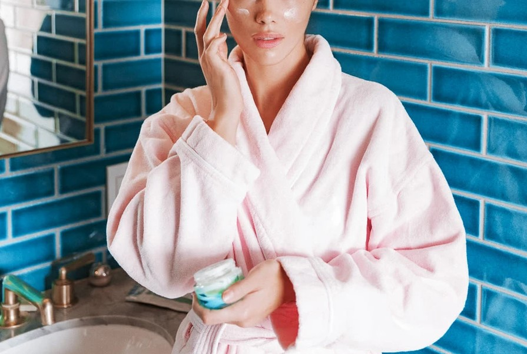

I slept through my meeting with Annee de Mamiel. The renowned holistic facialist—who’s booked out a full year in advance—was in town for three days, and the morning of my appointment with her turned out to be the day when this happened. Sleep debt aside, she was kind enough to chat with me later when I explained the whole situation. After finally meeting her, I can only imagine what getting an actual facial from the founder of de Mamiel would be like since I left her presence glowing anyway. See, Annee is the kind of facialist who lives in her garden. Her personal philosophy emphasizes the importance of ritual; of channeling positive energy; of slowing things down. She radiates wellness, healing, and growth. Last week, I called to ask for her advice and she filled me in on her top five tips for holistic, at-home skincare. They are straightforward and simple, which is pretty damn refreshing if you ask me:
BREATHE
"I always begin by telling people to stop, to pause, and to take this time for themselves. This is the first step in the process of looking after your skin. It’s very much about letting go of the day’s stress—I think it sort of comes from a deep rooted place; slowing down the sympathetic nervous system and breathing. Use this as time for yourself in that you aren’t just pumping cleanser on your face. You take it, you inhale, and breathe. One of the most important aspects of the formulas in each product I make is in the aroma. Breathing in those aromas and using them to destress is as important as anything you put on your skin, and can help you get rid of the tension you hold in your face."
FACIAL MASSAGE AND DRAINING
"So important. When you massage your face you are feeding the skin, you’re encouraging circulation and bringing in blood and oxygen and nutrients. You’re giving it life. Skin being a non-vital organ that’s constantly stressed, it is also the last organ to get nutrition, so a face massage encourages those nutrients to get to the skin. That’s why it’s so important."
SUNSCREEN
"Even in a city, in an urban life, wearing sunscreen to protect your skin from pollution, radiation and weather is really important. I use mine—it’s a 30 SPF so it’s perfect for urban environments."
FACIAL MISTS
"I love to use a mist as an essence. A really good facial mist will typically contain hyaluronic acid and other nutrients, so it’s almost like a serum in a mist. Just spraying your face is nice to do, but if you use three or four pumps of a good mist in your hand and apply it as part of your regular routine, you’re giving your skin that extra hydration it needs to pick itself up."
GET YOUR CLEANSER OFF
"Around the hairline and crevices, it’s really important to get your cleanser off your face to avoid buildup. I like to double cleanse because the first cleanse is about getting the grime off, and the second cleanse is the face massage. And then I use a hot cloth to get it off. Just be sure to change your cloth regularly—every couple of days. And then following with a mist or a good essence to replenish that hydration."